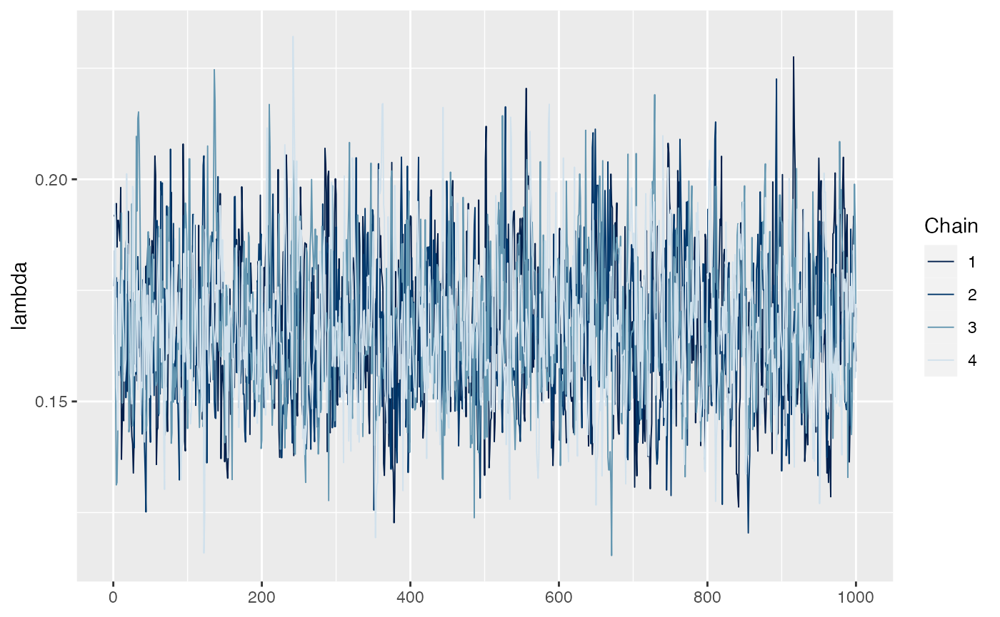
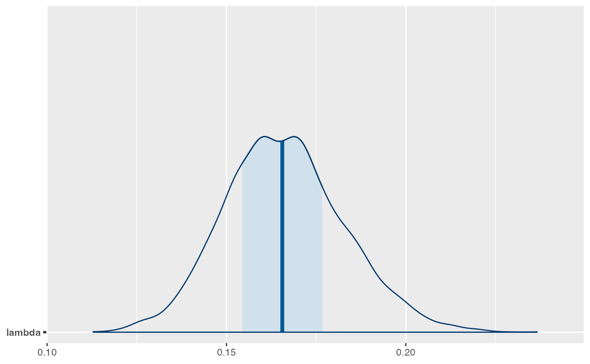

Serocatalytic models
library(seroepirecipes)
library(rstan)
#> Loading required package: StanHeaders
#>
#> rstan version 2.32.3 (Stan version 2.26.1)
#> For execution on a local, multicore CPU with excess RAM we recommend calling
#> options(mc.cores = parallel::detectCores()).
#> To avoid recompilation of unchanged Stan programs, we recommend calling
#> rstan_options(auto_write = TRUE)
#> For within-chain threading using `reduce_sum()` or `map_rect()` Stan functions,
#> change `threads_per_chain` option:
#> rstan_options(threads_per_chain = 1)
library(bayesplot)
#> This is bayesplot version 1.10.0
#> - Online documentation and vignettes at mc-stan.org/bayesplot
#> - bayesplot theme set to bayesplot::theme_default()
#> * Does _not_ affect other ggplot2 plots
#> * See ?bayesplot_theme_set for details on theme settingIntroduction
Serocatalytic models are used to model seroprevalence over time or
age in cross-sectional serosurveys as a function of the Force of
Infection (FOI) – the per capita rate (per year) that susceptible
individuals seroconvert either through infection or vaccination. In this
vignette, we will demonstrate how a simple serocatalytic model can be
fitted to age-stratified seroprevalence data using both a frequentist
framework (using glm) and Bayesian framework (using
Stan).
Other resources
There are two R packages for fitting serocatalytic models to seroprevalence data: serofoi and Rsero. Both packages provide implementations of the basic serocatalytic model and common extensions. An excellent resource for learning about the serocatalytic model is Chapter 4 of the textbook Epidemics: Models and Data using R by Ottar N. Bjørnstad.
Data requirements
Data requirements for the serocatalytic model are simple: the minimum variables required are the proportion of seropositive individuals stratified by age group. Note that inferences can only be drawn for time periods for which individuals in the sample were alive. Additionally, having seropositivity at multiple timepoints can allow an assessment of changes in FOI over time. Differences in FOI between sub-populations or demographic groups can also be measured using serocatalytic models (see Table 1)
| Use case | Minimum variables | NA |
|---|---|---|
| Population-wide FOI | Proportion seropositive by age | Estimating ascertainment rates, population-level seroprevalence, average age at first infection |
| Age-specific FOI | Proportion seropositive by age | Timing of historical outbreaks |
| Changes in FOI over time | Proportion seropositive by age, time and population | Timing of historical outbreaks, impact of interventions, changes in transmission rates over time |
| Changes in FOI in different populations | Proportion seropositive by age and/or time, seroreversion rate (known or estimated from data) | Impact of interventions on different populations and over time |
| FOI with seroreversion | Proportion seropositive by age and/or time, seroreversion rate (known or estimated from data) | In cases where immunity wanes and is not lifelong, can be used to estimate the force of infection and duration of seropositivity |
The model
The simplest catalytic model assumes:
- The FOI is constant across ages and over time
- There is no seroreversion (once individuals become seropositive, they remain seropositive indefinitely)
- No boosting of antibody response (individuals are either seropositive or seronegative)
- There is no cross-reactivity to other pathogens
- The population size is stable
Under this model, the rate of change of susceptible individuals (\(S\)) with age (\(a\)) is expressed as:
\[ \frac{dS}{dt} = -\lambda S(a) \] where \(\lambda\) is the constant FOI.
The proportion of the population seropositive at age \(a\), \(\pi(a)\) can then be solved as: \[ \pi(a)= 1-exp(-\lambda a) \]
Note either age (\(a\)) or time (\(t\)) could be used in the example above. The definition of seropositivity is important – for quantitative and semi-quantitative assays such as ELISA, a threshold must be chosen above which individuals are considered seropositive. This threshold is usually based on known antibody measurement distributions from individuals who are known to have been exposed or not.
Example: seroprevalence of measles neutralising antibodies in New Haven, USA in the 1950s
For this example, we are fitting to a dataset from the book “Epidemics: Models and Data using R” by Ottar Bjornstad, Chapter 4-3. We can see that we have age bands, the median age within that band, the number of samples in that band, the number positive and negative, and the seroprevalence in that age band (f). For this example we will subset the data, excluding the <1, 40-49 and 50+ brackets.
<< NOTE: this data comes from the Black et al. 1959 paper directly, so we can pull it ourselves and include in seroepirecipes. >>
## For now, fit to data from "Epidemics: Models and Data using R" by Ottar Bjornstad, Chapter 4-3
library(epimdr)
FALSE Loading required package: shiny
FALSE Loading required package: deSolve
FALSE Loading required package: polspline
data(black)
## Subsetting to specific age brackets
b2 <- black[-c(1,8,9),]
knitr::kable(b2)| age | mid | n | pos | neg | f | |
|---|---|---|---|---|---|---|
| 2 | 1-4 | 2.5 | 21 | 4 | 17 | 0.1904762 |
| 3 | 5-9 | 7.0 | 41 | 31 | 10 | 0.7560976 |
| 4 | 10-14 | 12.0 | 52 | 50 | 2 | 0.9615385 |
| 5 | 15-19 | 17.0 | 30 | 28 | 2 | 0.9333333 |
| 6 | 20-29 | 25.0 | 38 | 37 | 1 | 0.9736842 |
| 7 | 30-39 | 35.0 | 51 | 49 | 2 | 0.9607843 |
## [1] MLE method to estimate FOI
fit <- glm(cbind(pos,neg) ~ offset(log(mid)), family=binomial(link="cloglog"), data=b2)
exp(fit$coef)
FALSE (Intercept)
FALSE 0.1653329
## Plot predicted and observed
phi <- exp(coef(fit))
curve(1-exp(-phi*x), from=0, to=60, ylab="Seroprevalence", xlab="Age")
points(black$mid, black$f, pch="*", col="red")
points(b2$mid, b2$f, pch=8)Now we try the Stan version, implementing the FOI (lambda parameter) inference using MCMC
## [2] Fit this model in Stan
fit_Stan <- rstan::sampling(get_stan_models()$model_serocatalytic,
data=list(AGE_GROUPS = nrow(b2),
age_mid = b2$mid,
N = b2$n,
n_seropos = b2$pos))
FALSE
FALSE SAMPLING FOR MODEL 'model_serocatalytic' NOW (CHAIN 1).
FALSE Chain 1:
FALSE Chain 1: Gradient evaluation took 2.7e-05 seconds
FALSE Chain 1: 1000 transitions using 10 leapfrog steps per transition would take 0.27 seconds.
FALSE Chain 1: Adjust your expectations accordingly!
FALSE Chain 1:
FALSE Chain 1:
FALSE Chain 1: Iteration: 1 / 2000 [ 0%] (Warmup)
FALSE Chain 1: Iteration: 200 / 2000 [ 10%] (Warmup)
FALSE Chain 1: Iteration: 400 / 2000 [ 20%] (Warmup)
FALSE Chain 1: Iteration: 600 / 2000 [ 30%] (Warmup)
FALSE Chain 1: Iteration: 800 / 2000 [ 40%] (Warmup)
FALSE Chain 1: Iteration: 1000 / 2000 [ 50%] (Warmup)
FALSE Chain 1: Iteration: 1001 / 2000 [ 50%] (Sampling)
FALSE Chain 1: Iteration: 1200 / 2000 [ 60%] (Sampling)
FALSE Chain 1: Iteration: 1400 / 2000 [ 70%] (Sampling)
FALSE Chain 1: Iteration: 1600 / 2000 [ 80%] (Sampling)
FALSE Chain 1: Iteration: 1800 / 2000 [ 90%] (Sampling)
FALSE Chain 1: Iteration: 2000 / 2000 [100%] (Sampling)
FALSE Chain 1:
FALSE Chain 1: Elapsed Time: 0.05 seconds (Warm-up)
FALSE Chain 1: 0.046 seconds (Sampling)
FALSE Chain 1: 0.096 seconds (Total)
FALSE Chain 1:
FALSE
FALSE SAMPLING FOR MODEL 'model_serocatalytic' NOW (CHAIN 2).
FALSE Chain 2: Rejecting initial value:
FALSE Chain 2: Log probability evaluates to log(0), i.e. negative infinity.
FALSE Chain 2: Stan can't start sampling from this initial value.
FALSE Chain 2: Rejecting initial value:
FALSE Chain 2: Log probability evaluates to log(0), i.e. negative infinity.
FALSE Chain 2: Stan can't start sampling from this initial value.
FALSE Chain 2: Rejecting initial value:
FALSE Chain 2: Log probability evaluates to log(0), i.e. negative infinity.
FALSE Chain 2: Stan can't start sampling from this initial value.
FALSE Chain 2: Rejecting initial value:
FALSE Chain 2: Log probability evaluates to log(0), i.e. negative infinity.
FALSE Chain 2: Stan can't start sampling from this initial value.
FALSE Chain 2: Rejecting initial value:
FALSE Chain 2: Log probability evaluates to log(0), i.e. negative infinity.
FALSE Chain 2: Stan can't start sampling from this initial value.
FALSE Chain 2:
FALSE Chain 2: Gradient evaluation took 1.2e-05 seconds
FALSE Chain 2: 1000 transitions using 10 leapfrog steps per transition would take 0.12 seconds.
FALSE Chain 2: Adjust your expectations accordingly!
FALSE Chain 2:
FALSE Chain 2:
FALSE Chain 2: Iteration: 1 / 2000 [ 0%] (Warmup)
FALSE Chain 2: Iteration: 200 / 2000 [ 10%] (Warmup)
FALSE Chain 2: Iteration: 400 / 2000 [ 20%] (Warmup)
FALSE Chain 2: Iteration: 600 / 2000 [ 30%] (Warmup)
FALSE Chain 2: Iteration: 800 / 2000 [ 40%] (Warmup)
FALSE Chain 2: Iteration: 1000 / 2000 [ 50%] (Warmup)
FALSE Chain 2: Iteration: 1001 / 2000 [ 50%] (Sampling)
FALSE Chain 2: Iteration: 1200 / 2000 [ 60%] (Sampling)
FALSE Chain 2: Iteration: 1400 / 2000 [ 70%] (Sampling)
FALSE Chain 2: Iteration: 1600 / 2000 [ 80%] (Sampling)
FALSE Chain 2: Iteration: 1800 / 2000 [ 90%] (Sampling)
FALSE Chain 2: Iteration: 2000 / 2000 [100%] (Sampling)
FALSE Chain 2:
FALSE Chain 2: Elapsed Time: 0.05 seconds (Warm-up)
FALSE Chain 2: 0.051 seconds (Sampling)
FALSE Chain 2: 0.101 seconds (Total)
FALSE Chain 2:
FALSE
FALSE SAMPLING FOR MODEL 'model_serocatalytic' NOW (CHAIN 3).
FALSE Chain 3: Rejecting initial value:
FALSE Chain 3: Log probability evaluates to log(0), i.e. negative infinity.
FALSE Chain 3: Stan can't start sampling from this initial value.
FALSE Chain 3: Rejecting initial value:
FALSE Chain 3: Log probability evaluates to log(0), i.e. negative infinity.
FALSE Chain 3: Stan can't start sampling from this initial value.
FALSE Chain 3: Rejecting initial value:
FALSE Chain 3: Log probability evaluates to log(0), i.e. negative infinity.
FALSE Chain 3: Stan can't start sampling from this initial value.
FALSE Chain 3: Rejecting initial value:
FALSE Chain 3: Log probability evaluates to log(0), i.e. negative infinity.
FALSE Chain 3: Stan can't start sampling from this initial value.
FALSE Chain 3:
FALSE Chain 3: Gradient evaluation took 1.2e-05 seconds
FALSE Chain 3: 1000 transitions using 10 leapfrog steps per transition would take 0.12 seconds.
FALSE Chain 3: Adjust your expectations accordingly!
FALSE Chain 3:
FALSE Chain 3:
FALSE Chain 3: Iteration: 1 / 2000 [ 0%] (Warmup)
FALSE Chain 3: Iteration: 200 / 2000 [ 10%] (Warmup)
FALSE Chain 3: Iteration: 400 / 2000 [ 20%] (Warmup)
FALSE Chain 3: Iteration: 600 / 2000 [ 30%] (Warmup)
FALSE Chain 3: Iteration: 800 / 2000 [ 40%] (Warmup)
FALSE Chain 3: Iteration: 1000 / 2000 [ 50%] (Warmup)
FALSE Chain 3: Iteration: 1001 / 2000 [ 50%] (Sampling)
FALSE Chain 3: Iteration: 1200 / 2000 [ 60%] (Sampling)
FALSE Chain 3: Iteration: 1400 / 2000 [ 70%] (Sampling)
FALSE Chain 3: Iteration: 1600 / 2000 [ 80%] (Sampling)
FALSE Chain 3: Iteration: 1800 / 2000 [ 90%] (Sampling)
FALSE Chain 3: Iteration: 2000 / 2000 [100%] (Sampling)
FALSE Chain 3:
FALSE Chain 3: Elapsed Time: 0.049 seconds (Warm-up)
FALSE Chain 3: 0.047 seconds (Sampling)
FALSE Chain 3: 0.096 seconds (Total)
FALSE Chain 3:
FALSE
FALSE SAMPLING FOR MODEL 'model_serocatalytic' NOW (CHAIN 4).
FALSE Chain 4:
FALSE Chain 4: Gradient evaluation took 1.3e-05 seconds
FALSE Chain 4: 1000 transitions using 10 leapfrog steps per transition would take 0.13 seconds.
FALSE Chain 4: Adjust your expectations accordingly!
FALSE Chain 4:
FALSE Chain 4:
FALSE Chain 4: Iteration: 1 / 2000 [ 0%] (Warmup)
FALSE Chain 4: Iteration: 200 / 2000 [ 10%] (Warmup)
FALSE Chain 4: Iteration: 400 / 2000 [ 20%] (Warmup)
FALSE Chain 4: Iteration: 600 / 2000 [ 30%] (Warmup)
FALSE Chain 4: Iteration: 800 / 2000 [ 40%] (Warmup)
FALSE Chain 4: Iteration: 1000 / 2000 [ 50%] (Warmup)
FALSE Chain 4: Iteration: 1001 / 2000 [ 50%] (Sampling)
FALSE Chain 4: Iteration: 1200 / 2000 [ 60%] (Sampling)
FALSE Chain 4: Iteration: 1400 / 2000 [ 70%] (Sampling)
FALSE Chain 4: Iteration: 1600 / 2000 [ 80%] (Sampling)
FALSE Chain 4: Iteration: 1800 / 2000 [ 90%] (Sampling)
FALSE Chain 4: Iteration: 2000 / 2000 [100%] (Sampling)
FALSE Chain 4:
FALSE Chain 4: Elapsed Time: 0.049 seconds (Warm-up)
FALSE Chain 4: 0.05 seconds (Sampling)
FALSE Chain 4: 0.099 seconds (Total)
FALSE Chain 4:
## Look at output
fit_Stan
FALSE Inference for Stan model: model_serocatalytic.
FALSE 4 chains, each with iter=2000; warmup=1000; thin=1;
FALSE post-warmup draws per chain=1000, total post-warmup draws=4000.
FALSE
FALSE mean se_mean sd 2.5% 25% 50% 75% 97.5% n_eff Rhat
FALSE log_lambda -1.80 0.00 0.10 -2.00 -1.87 -1.80 -1.73 -1.61 1598 1
FALSE lambda 0.17 0.00 0.02 0.14 0.15 0.17 0.18 0.20 1616 1
FALSE lp__ -70.31 0.02 0.72 -72.37 -70.47 -70.03 -69.86 -69.81 1706 1
FALSE
FALSE Samples were drawn using NUTS(diag_e) at Thu Dec 14 17:12:14 2023.
FALSE For each parameter, n_eff is a crude measure of effective sample size,
FALSE and Rhat is the potential scale reduction factor on split chains (at
FALSE convergence, Rhat=1).
mcmc_trace(fit_Stan, pars="lambda")

The stan model looks like this:
data {
int<lower=0> AGE_GROUPS;
vector[AGE_GROUPS] age_mid;
int<lower=0> N[AGE_GROUPS];
int<lower=0> n_seropos[AGE_GROUPS];
}
parameters {
// log FOI
real log_lambda;
}
transformed parameters {
// FOI
real<lower=0.0> lambda;
lambda = exp(log_lambda);
}
model {
for(a in 1:AGE_GROUPS) n_seropos[a] ~ binomial(N[a], 1.0-exp(-lambda*age_mid[a]));
}Extensions
Time- and age-varying FOI
If FOI is not assumed to be constant and varies by age or time (for example due to the introduction of a new intervention), then the FOI may be calculated as a function of time or age \(\lambda(t)\), or as multiple parameter values covering different time periods.
<< NOTE: where did this equation come from? >> Discrete age varying FOI (one change point): \[ \pi(a,t) = 1-exp( -[ \lambda_{1}(a-(t - \gamma_{1}))+\lambda_{2}(t - \gamma_{2})]) \]
Time-varying, discrete FOI: \[ \pi(a,t) = 1-exp (\sum_{i = t - a +1 }^{i= t} \lambda_{i} ) \] This model has been implemented as part of the serofoi R package, described here.
Time-varying FOI as a function of time: \[ \pi(a, t) = 1 - exp(-\int_{t-a}^{a} \lambda(u)du) \]
Accounting seroreversion
In many infectious diseases, antibody response will wane over time to the point that individuals who were previously infected may become seronegative. To account for this, we usea reversible serocatalytic model which includes a seroreversion parameter,\(ρ\). Parameters of this model are:
- Seroconversion rate,\(λ\), the mean annual rate of seroconversion (negative to positive)
- Seroreversion rate, \(ρ\), the mean annual rate of seroreversion(positive to negative). \(1/ρ\) is the antibody persistence duration in years
The proportion seropositive at age \(a\) can again be solved analytically as:
\[ \pi(a)=\frac{\lambda}{ \lambda +\rho}(1−exp(−a(\lambda+\rho)) \]